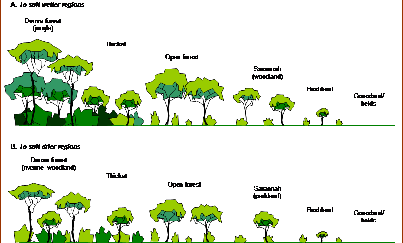

This file can be an extra source of information on vegetation maps.
I am still thinking about how best to write and store these helpfiles. This one is written in html, probably better to write in markdown.
Default vegetation types (you may recognise the image! I can try to improve the quality of the copy):
A vegetation map file needs to be saved as a space delimited text file with the suffix '.txt' and a grid of single letters from the codes DTOSBGN. At the very simplest: D D would define a map of 2 cells of vegetation code D. The default names for the codes are : "Dense Forest","Thicket","Open Forest","Savannah","Bush","Grass","No-go area". These names can be changed, either in an attribute file (see below) or in the user interface.
An optional attribute file needs to be saved as a comma delimited text file with the suffix '.csv'. It needs to consist of 3 columns. The first should contain the vegetation codes, the 2nd column should contain corresponding names for each code. Subsequent columns will be used to determine fly behaviour in each vegetation type.